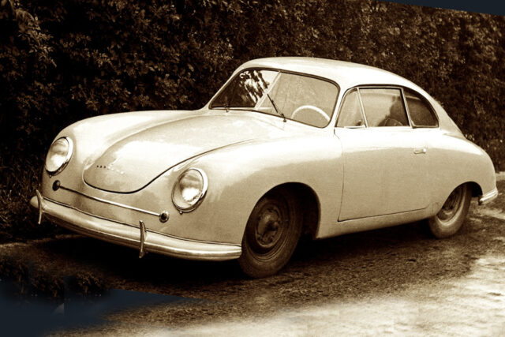
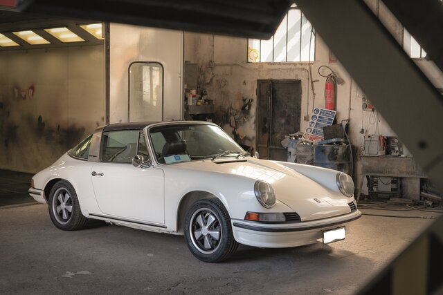

A Porsche autógyártó vállalatot Ferdinand Porsche alapította 1931-ben Stuttgartban, Németországban. Eredetileg tanácsadó céget indított, de a vállalat első saját nevét viselő autója, a Porsche 356, 1948-ban jelent meg. Ezt követte az ikonikus Porsche 911, amely 1963-ban debütált. A Porsche ma a Volkswagen Csoport tagja, és világszerte ismert luxus sportautók gyártójaként.
 Itt mutatjuk be személyes kedvencünket a Porsche kínálatából.
Porsche 911 Carrera 3S
BMW X6